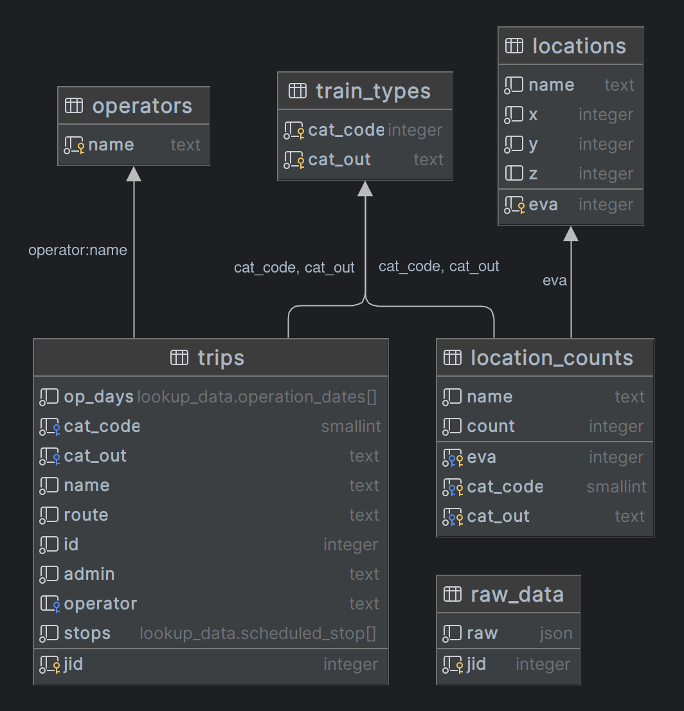

HAFAS-RS
Development of a program written in Rust to query "Deutsche Bahn"-data
Background
The Deutsche Bahn AG (abbreviated DB) is the German national railway company. As DB is one of the largest transport companies of the world and the largest railway operator in Europe (according to this source), a complex network of time schedules, trains and routes in Germany and other European countries has to be organized. To facilitate the online journey planner for customers the Software HAFAS (HaCon Fahrplan-Auskunfts-System) of the company HaCon (Hannover Consulting, belonging to Siemens) is used. Rust is a general-purpose programming language with outstanding performance and safety. It doesn’t require the use of a garbage collector or reference counting to ensure memory safety. Rust can be used for systems programming whilst also offering high-level features. For example, programs can be created with Rust to draw data from different software e.g. HAFAS.
Documentation
The recommended way to access the documentation is through the generated HTML version in the docs folder.
There is both rustdoc as mdbook documentation on this project, found in the docs folder.
About the project
The purpous of this project named HAFAS-RS, done for a high school presentation (GFS) by Adrian Struwe (Eskaan), was to develop a program to collect and list targeted data on trips, train types, locations and operators of the Deutsche Bahn.
It is currently licenced under the GPL3 licence, allowing open distribution and modification of the code. The project is fully documented, both in source code (per rustdoc) as in this [mdbook].
Goals
Goals
The primary goal of the project was to extract data, e.g. the most used stations, and display them in a database.
Another goal was to query and compare train schedules to realtime data. Sadly, after many experiments I realized this API was designed to resist such data collection attempts.
Project structure
General structure
The project is split into two main parts:
-
hafas-wrap, the library to access the HAFAS1.
It provides simple ways to access the HAFAS through multiple methods and a generic type system which also supports custom request and response types out of the common usage.
-
database-cli that uses data queried through the library and injects certain parts into a postgresql database for further processig.
It currently also contains the subcommands to print a diagram showing the most used stations in the database. If you are searching about how to use this project, you will have to look here.
Most of the project, although not all, is written in a more procedural style, as this program is based on a cli and corresponding library. There are more object oriented parts in the library.
Further documentation
Each of those projects contain their own README.md file further explaining their use.
I also recommend using the rust-doc documentation for the project-level documentation, to be found in the docs/rustdoc folder ./docs/rustdoc/database_cli/index.html.
Hacon Fahrplan Auskunfts System
The hafas_wrap library
The main functionality comes with the Client object, as all requests are done with it.
This library also provides some hafas_profiles for common endpoints and request and response structs to simplify the working with HAFAS endpoints.
The util module provides functions to de- and encode Base64-AES Strings using a statically set key and a md5 hashing function needed for requests.
The request function
It provides a simple, through customisable system to access the HAFAS1. There are three common request parameters:
pub async fn request<I: Serialize + Sized, O: DeserializeOwned>(
&self,
profile: &HafasProfile,
requests: Vec<RawHafasRequest<I>>,
) -> Result<Vec<O>, RequestError> {-
A reference to it
self, to access the reqwest request client used to make web requests -
A reference to an instance of the
HafasProfiletypeA
HafasProfilespecifies the endpoint, possible encryption and additional config data that have to be passed on with the request -
An array containing instances of the
RawHafasRequesttypeThe
RawHafasRequesttype (and it's request generic) have to implementserde::Serialize + Send. These implementations are needed for the type to be serialized to a JSON string, used in the POST request to HAFAS1.
The request function also tries to parse the resulting request bodies into the specified generic type O.
This type has to implement DeserializeOwned so it can be deserialized from a JSON object.
Request procedure
There are two methods of requesting data: Either request or request_raw,
where request is mainly a wrapper around the request_raw method to make parsing of the results easier.
Here is a summary of what the functions do:
Both:
-
Clone the
HafasProfileinto a JSON object,Serialize the requests into a JSON object and set the
svcReqLvalue of the request to it.Serialize the JSON object into a String
let mut req_values = profile.config.clone(); req_values["svcReqL"] = serde_json::to_value(&requests).unwrap(); let req_string = serde_json::to_string(&req_values)?; -
Optionally create a checksum for the GET parameters of the request.
let checksum = match &profile.secret { Some(secret) => util::hash_md5(&(req_string.clone() + secret)), None => String::new(), }; -
Create, send and wait for the response text of a web request to HAFAS1.
let response = self .reqwest_client .post(profile.url) .header("Accept", "application/json") .header("Content-Type", "application/json") .query(&[("checksum", &checksum)]) .body(req_string) .send() .await?;
request_raw at this point returns the response String, whilst request continues with parsing the response:
Only request:
-
Checks if HAFAS1 returned an error message.
if res.get("err") != Some(&Value::String(String::from("OK"))) { return Err(RequestError::InternalError( res.get("err") -
Deserializes the request to a JSON object and then tries to get the response body segment as an array.
res.get("svcResL") .ok_or(RequestError::DeserializeError( "Response not an Object or svcResL does not exist in it.", ))? .as_array() .ok_or(RequestError::DeserializeError("svcResL is not an array."))? -
Deserializes the array of JSON objects into the specified generic type
O.iter() .map(|r| { Ok(serde_json::from_value( r.get("res") .ok_or(RequestError::DeserializeError( "field res does not exist. This is most likely a request error.", ))? .clone(), )?) }) .collect::<Result<Vec<O>, RequestError>>()
HAFAS Profiles
In the hafas_profiles module, you can find multiple config presets for different HAFAS1 endpoints.
These were collected from different other open source projects.
Methods
In the methods module, you can find some Request and Response struct presets. You do not have to use these, but they have been tested and seem to work.
Current available methods:
- HimSearch
- JourneyMatch
- JourneyDetail
Utils
Some miscellaneous functions like ones to AES-Encrypt with a set key or to hash a String using the md5 digest algorithm.
The database-cli toolchain
This is currently the only implementation of the aforementioned library.
The current use is to create a database of trips, train types, locations and operators.
For the exact layout, see database_layout.png at the root of the project.
You can also create a simple diagram from usage statistics.
Although the program does not need a live database to compile, it will need a postgres database to function.
The database has to be on localhost, with the name db-statistics and the user postgres (password-less)
being able to access all tables specified in the database layout.
To prepare the database for use, run database-cli migrate. This will create all necessary schemas, tables, types and functions.
For the exact usage, refer to the rustdoc documentation of the [main] method or the usage section in the book.
This crate is mostly written in a more procedural (althrough object-oriented) programming style, as common for a cli interface to a library. This results in many modules which mostly contain single functions instead of entire objects.
For this module-level I highly recommend the rust-doc documentation for this crate available here
For better structured information on the cli commands, see the usage section of this book.
Main
This is the root module of the crate, here lies the function that is called on program start. This module parses the cli arguments and calls the corresponding functions.
request_raw_jids
This module is responsible for the data request_raw subcommand. It requests raw data from HAFAS and writes it to the raw_data table.
parse_raw_jids
This module gets called from the data parse subcommand and parses data from the raw_data and inserts it into the other tables trips,locations,operators and train_types.
count_location_trips
This module is an extension to the data parse subcommand, called by using dara parse_heatmap.
compare_raw_data
This module is called from the data check subcommand. It uses the request_raw_jids module to request a single jid and compare it to the raw_data table.
create_heatmap_diagram
This module contains the only practical use, I have found yet, besides toying with database data. It is called by the create_heatmap subcommand and creates a horizontal chart diagram displaying the most used stations in the database.
Installation
Dependencies
This program depends on:
- A running Postgresql server on
postgres://postgres@localhost/db-statistics
Tested with Postgresql 13 - Rust stable
- A working internet connection
Quick starter guide
Disclaimer: Most of this guide only works on Linux, you may refer to the Postgresql documentation and the Rust website for more information on other systems.
- Firstly, you have to install postgresql:
- Install the database package on your system:
- Arch:
sudo pacman -S postgresql - Debain & Ubuntu:
sudo apt install postgresql - Other: Postgresql install guide
- Arch:
- Then, login into the newly created user:
sudo su postgres. - Create a new database cluster using
initdb -D directory/to/store/data. - Start the Postgresql server (usually
sudo systemctl start postgresql). - Create a new database in the cluster named db-statistics in the cluster:
createdb db-statistics.
- Install the database package on your system:
- Compile the project:
- Install the rustup package:
- Arch:
sudo pacman -S rustup - Debial & Ubuntu:
sudo apt install rustup - Other: Rustup install guide
- Arch:
- Run
rustup install stablein your terminal. - Run
cargo build --releasein the hafas-rs folder. This should create a folder namedtarget/releasethat contains an executable nameddatabase-cli. Congratulations, you just successfully compiled the project!
- Install the rustup package:
- Then use
database-cli migrateto check the connection to the local database and create neccessary infrastructure like schemas, tables and functions. - Use
database-cli data request_raw --parseTo request data and parse it into the database. This will take a while for all ~1.5 Million entries to be fetched. I recommend running this command over night and at other times the system is not under heavy load. - You are ready to play with the data in your favourite SQL prompt! See the HAFAS Section for more information on the database structure.
(Optional)
-
Use
database-cli data parse_heatmapto parse trip's eva counts into a lighter format. -
Use
database-cli create_heatmap -m 10to get a diagram of the 10 most used stations.After following these steps, the program should create an image named
heatmap.svgin the current folder. Here is an example for it:
Usage
As the name of the crate already suggests, database-cli compiles into a command line interface.
This interface works together with a postgresql database to store and request HAFAS data.
List of sub-commands:
All commands can be passed -v or -vv to make them more verbose.
You can add the --help argument to any subcommand to see details about the arguments.
If you do not want to compile the cli, refer to the source code for arguments.
Responsible code in `main.rs`
// Setup clap with subcommands
let mut cmd = command!("Hafas Scraping Database Tools")
.arg(arg!(-v --verbose... "Verbose output. Specify twice for trace mode"))
.arg(arg!(-q --quiet "Only print on error and warnings"))
.subcommands(&[
command!("data")
.about("Lookup and schedule data management")
.subcommands(&[
command!("request_raw")
.about("Request raw schedule data")
.args(&[
arg!(<TO> "Stop at jid").value_parser(value_parser!(usize)),
arg!([FROM] "Begin with jid, defaults to 0")
.value_parser(value_parser!(usize)),
arg!(-u --update "Also request existing entries"),
arg!(-c --continue "Continue at current highes jid"),
arg!(-p --parse "Synchronously parse using `data parse`"),
arg!(-s --"chunk-size" <SIZE> "Chunk size of requests. Defaults to 100").value_parser(value_parser!(usize)),
]),
command!("parse")
.about("Parse raw data to schedule and stop data.")
.args(&[
arg!([FROM] "Begin with jid, defaults to 0").value_parser(value_parser!(i32)),
arg!([TO] "Stop at jid").value_parser(value_parser!(i32)),
arg!(-s --"chunk-size" <SIZE> "Chunk size of requests. Defaults to 100").value_parser(value_parser!(i32)),
]),
command!("parse_heatmap")
.about("Parse trip data to heatmap counts."),
command!("check")
.about("Check if a single jid is different to the remote data.").arg(arg!(<jid> "jid to check on").value_parser(value_parser!(usize))),
]),
command!("create_heatmap")
.about("Create heatmap diagram from parsed data.")
.args(&[
arg!([FILE] "Output file to use. Defaults to ./heatmap.svg"),
arg!(-m --max <SIZE> "Maximum entries to display").value_parser(value_parser!(usize)),
arg!(-c --"filter-cat-code" <CAT_CODE> "Filter results by cat code").value_parser(value_parser!(u8)),
arg!(-o --"filter-cat-out" <CAT_OUT> "Filter results by cat out (f.e. RE, ICE)"),
arg!(-s --"limit-search" <SIZE> "Maximum search results to query").value_parser(value_parser!(i64)),
]),
//command!("status").about("Query database status"),
command!("migrate").about("Migrate/create database"),
]);-
dataThis command can only be used together with one of it's subcommands, it does not have any properties to it's own. It generally collects commands that are used to move lookup data for train trips on the database.-
request_raw: This command requests raw schedule data over all jids in the HAFAS endpoint. Independently of theTOargument, the command will panic if it reaches the last jid. The ususal last jid is around 1.5 Million.This is usually the second command ran after
migrate.Be aware that, depending on your computer and network connection, this command usually takes quite a long time to finish. It is recommended, although not necessary, to invoke it with
--parse.It is recommended to leave all other optional flags to a default value to prevent a timeout.
-
parse: This command parses the data from theraw_datatable to a usable format and inserts it into the other tables. It can also be called automatically by adding--parseto the arguments ofrequest_raw.You may look at the database scheme and mainly the hafas section for more details about how data gets parsed.
-
parse_heatmap: This command is a command that should be called at some time before using thecreate_heatmapfeature. It counts together all of the recorded train trips into their own table for faster access.As near and local trafic can obfuscate the ending image, I recommend setting
-o 'ICE'as filter. -
check: This command checks if data from the HAFAS endpoint differs from the current data. This check is only done for a single jid. A difference might hint at a schedule change.
-
-
create_heatmapCreates a horizontal bar diagram of the most used stations in the lookup table. It can be filtered by cat_code, cat_out and search limit. For currently unknown reasons, anything over 11 Bars will mess up the station names. -
migrate: Creates all necessary infrastructure on the remote database. The cli itself currently only operates on the lookup_data schema, but thissqlxfeature needs
Most of the commands will result in a progress bar like this:

The counts at the end should give you a rough hint on how long the command will take.
HAFAS and Database layout
Database Layout

DDL for Database Layout - click to expand
CREATE SCHEMA lookup_data;
CREATE TABLE lookup_data.raw_data (
jid int PRIMARY KEY,
raw json NOT NULL
);
CREATE TABLE lookup_data.locations (
eva int PRIMARY KEY,
name text NOT NULL,
x int NOT NULL,
y int NOT NULL,
z int
);
CREATE TABLE lookup_data.operators (
name text PRIMARY KEY
);
CREATE TABLE lookup_data.train_types (
cat_code int NOT NULL,
cat_out text NOT NULL,
PRIMARY KEY (cat_code, cat_out)
);
CREATE TYPE lookup_data.operation_dates AS (
dates date[],
from_loc int,
to_loc int,
info text
);
CREATE TYPE lookup_data.scheduled_stop AS (
eva int,
scheduled_arrival time,
scheduled_departure time
);
CREATE TABLE lookup_data.trips (
jid int PRIMARY KEY,
op_days lookup_data.operation_dates[] NOT NULL,
cat_code smallint NOT NULL,
cat_out text NOT NULL,
FOREIGN KEY (cat_code, cat_out) REFERENCES lookup_data.train_types (cat_code, cat_out),
name text NOT NULL,
route text NOT NULL,
id int NOT NULL,
admin text NOT NULL,
operator text REFERENCES lookup_data.operators (name),
stops lookup_data.scheduled_stop[] NOT NULL
);
CREATE TABLE lookup_data.location_counts (
eva int REFERENCES lookup_data.locations (eva),
cat_code smallint NOT NULL,
cat_out text NOT NULL,
FOREIGN KEY (cat_code, cat_out) REFERENCES lookup_data.train_types (cat_code, cat_out),
PRIMARY KEY (eva, cat_code, cat_out),
name text NOT NULL,
count int NOT NULL
);
CREATE FUNCTION lookup_data.get_evas(lookup_data.scheduled_stop[]) RETURNS int[] AS
$func$
SELECT array_agg(vals)
FROM (select (unnest($1)).eva as vals) AS stop_evas;
$func$ LANGUAGE sql STABLE;
The whole database is currently contained to the lookup_data scheme.
The common scheme is shown above, with a few custom composite types and functions explained here:
operation_datesis a type that contains an array ofdates, afrom_loceva with correspondingto_loceva and ainfotext.scheduled_stopis a type describing a stop of a trip at a station. It contains theeva, thescheduled_arrivaltime and correspondingscheduled_departuretime.from_evasis a function taking an array ofscheduled_stopelements, extracting only theevaas int array from it.
Future of the project
Future of the project
I plan to continue my work on this project and maybe one day develop a good HAFAS library for Rust. This is the primary goal for the future, after which I plan to create a public API that serves better readable responses than HAFAS.